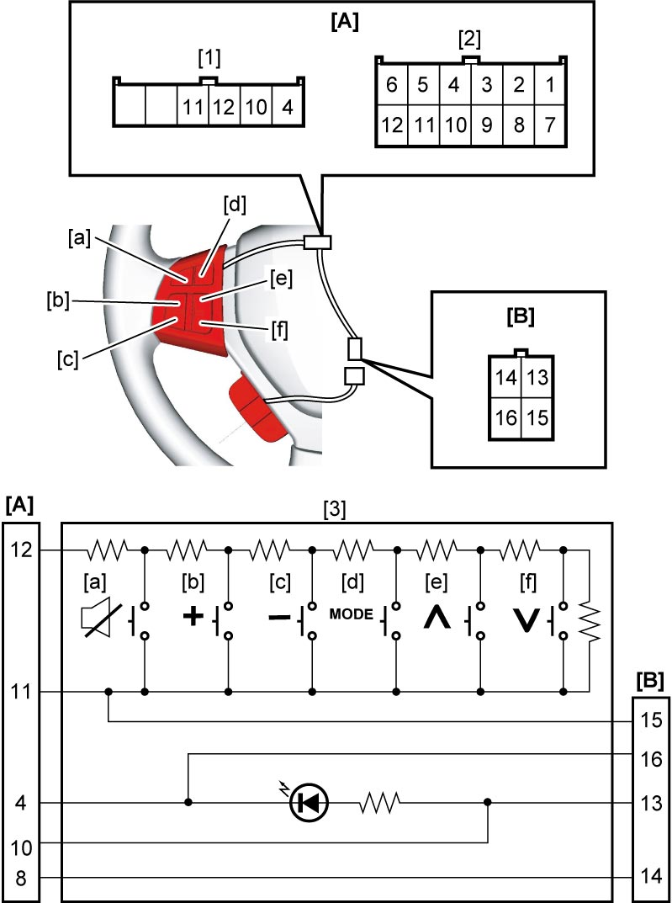
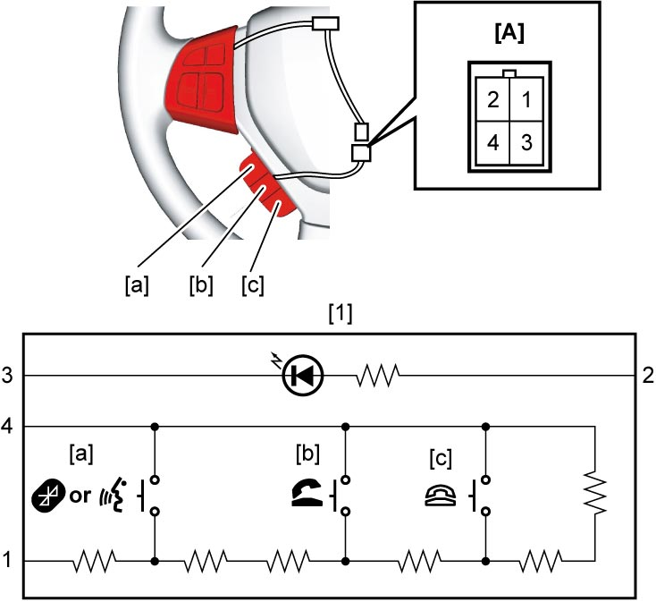

9O
| Steering Switch (Audio Control Switch and Hands-Free Switch) Inspection (If Equipped) |
1)Remove driver air bag (inflator) module. 
2)Disconnect steering switch connector.
3)Measure resistance between the following terminals under each condition in the table.
4)Check for continuity between the following terminals.
•For vehicles not equipped with hands-free switch: between terminals “4” and “10”
•For vehicles equipped with hands-free switch: between connectors [A] and [B]
•For vehicles equipped with hands-free switch: between connectors [A] and [B]
NOTE:
Set tester at diode range when measuring between terminals 4 and 10, 4 and 13, 10 and 16, 13 and 16.
5)If check result is not as specified, replace audio control switch.


 "Expand image")
| [A]: | Steering switch connector (to contact coil) |
| [B]: | Steering switch connector (to hands-free switch) |
| [1]: | Without cruise control switch and hands-free switch |
| [2]: | With cruise control switch |
| [3]: | Audio control switch |
Audio control switch resistance
| Terminal position | Resistance | Measurement condition |
|---|---|---|
| 12 – 11 | 56 ± 0.6 Ω | Mute switch [a]: ON |
| 131 ± 1.3 Ω | Volume switch [b]: ON | |
| 241 ± 2.4 Ω | Volume switch [c]: ON | |
| 421 ± 4.2 Ω | Mode switch [d]: ON | |
| 751 ± 7.5 Ω | Seek switch [e]: ON | |
| 1571 ± 15.7 Ω | Seek switch [f]: ON | |
| 5171 ± 51.7 Ω | Except above |
6)Measure resistance between the following terminals under each condition in the table.
7)Check for continuity between terminals “2” and “3”.
NOTE:
Set tester at diode range when measuring between terminals 2 and 3.
8)If check result is not as specified, replace hands-free switch.

 "Expand image")
| [A]: | Hands-free switch connector | [1]: | Hands-free switch |
Hands-free switch resistance
| Terminal position | Resistance | Measurement condition |
|---|---|---|
| 1 – 4 | 56 ± 0.6 Ω | Talk switch [a]: ON |
| 241 ± 2.4 Ω | Off hook switch [b]: ON | |
| 751 ± 7.5 Ω | On hook switch [c]: ON | |
| 5171 ± 51.7 Ω | Except above |